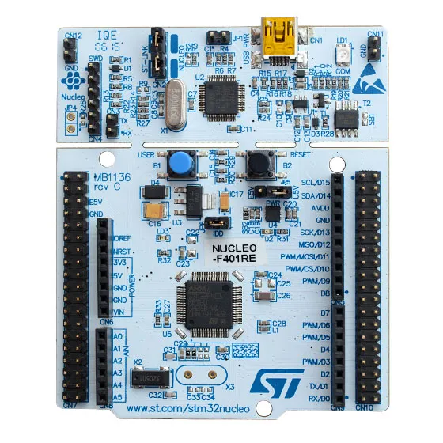
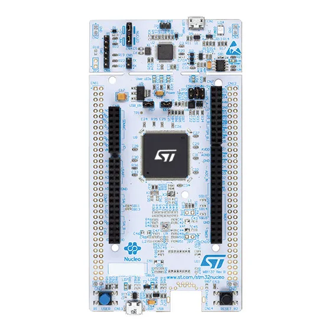
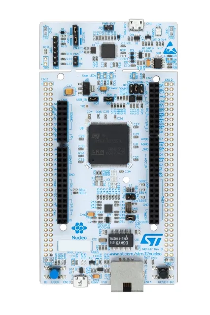
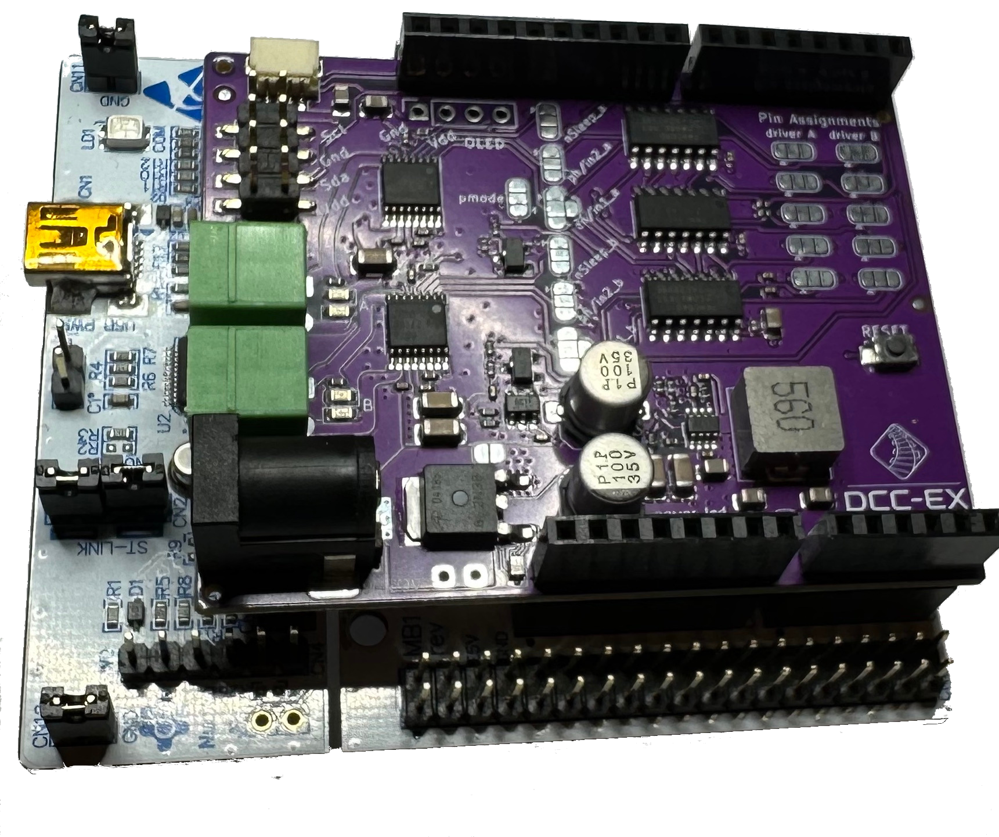
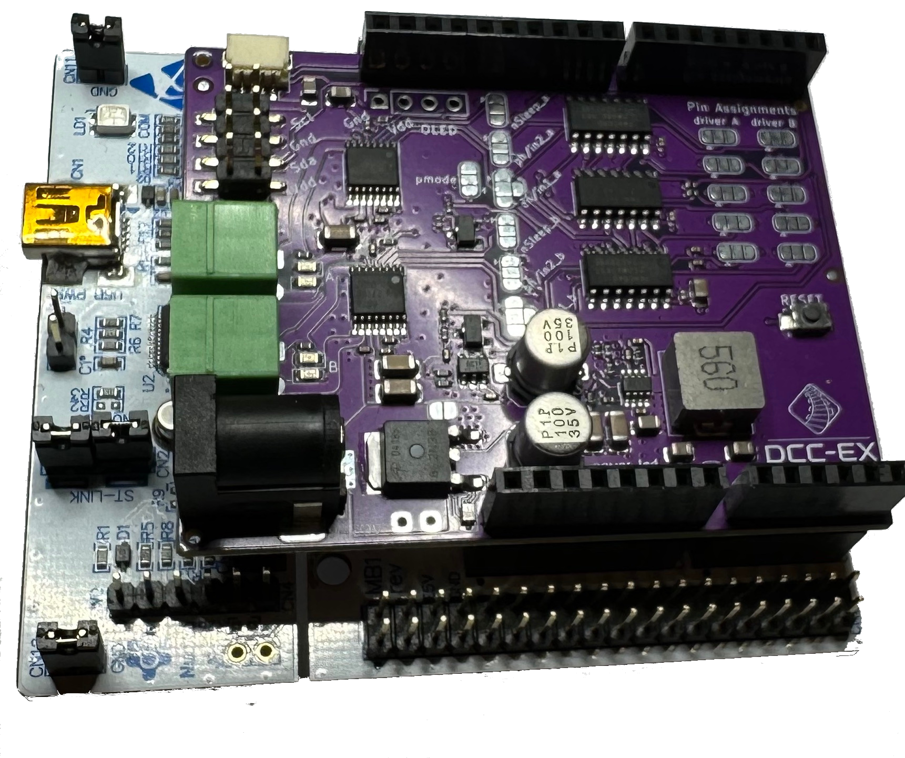

STMicroelectronics Nucleo (Recommended)


STMicroelectronics STM32 NUCLEO series
STMicroelectronics has a range of ARM based microcontrollers that are generally available, sold from reputable global resellers such as Digi-Key and Mouser, and have exceptional build quality for their price (often lower than clone Arduino Mega models, and presently lower than all genuine Arduino Mega prices.)
Further to this, all of the NUCLEO series of development boards also provide Arduino Uno compatible header sockets, meaning existing motor (and other) shields can just plug straight in, providing they are 3v3 compatible (see note above).
The NUCLEO series have a great deal more RAM (128KB to 256KB vs 8KB for a Mega), double or more FLASH (512KB to 2MB) for program storage, and much faster CPU speed (100 to 180Mhz vs 16Mhz) than the current AVR-based UNO and Mega.
With those attributes comes the potential to support much larger EX-RAIL scripts, and therefore much larger layouts needing animation and automation, and new features like built-in Ethernet.
Nucleo-64 vs Nucleo-144 Form Factors
The Nucleo range come in two basic form factors, being Nucleo-64 and Nucleo-144. The Nucleo-64 range have a more UNO-sized shape and design with a set of Arduino UNO style headers, but have many more pins available on additional connectors due to using a large 64-pin microcontroller. The Nucleo-144 however is much larger, larger even than an Arduino Mega2560 with headers to accept Arduino UNO shields, and 112 pins available on the extended connectors.
  {kind=link}
{kind=link}
{kind=link}
The advantage of the Nucleo-64 range is that they are very keenly priced at around the same price as a clone Arduino Mega2560, but have plenty of RAM and flash, etc. The Nucleo-64s most closely resembles the ubiquitous Arduino Uno form factor, including having Uno compatible header sockets in addition to Morpho pins for a much larger I/O capability than an Uno.
They have 50 I/O pins compared with the Uno’s 20, and only 20 less than the Arduino Mega despite its diminutive size. For most use cases it is therefore a suitable substitute for a Mega. Just as with a Mega, use of a Wifi shield requires jumpering the serial port.
Primary advantages of the Nucleo-144 range is just how many pins are availabe, many more peripherals like serial ports and so on. Each of the Nucleo-144 series has a larger footprint than the Nucleo-64s, while still retaining the Uno compatible header sockets, with 114 I/O pins. That said, they are only slightly physically larger (20mm wider, 33mm longer) than an Arduino Mega 2560.
The NUCLEO-F4x9ZI models also have Ethernet included for less than the cost of just an Ethernet shield for an Arduino! Nucleo-144 boards also have an available serial port on standard Arduino pins D0/D1 which allows easy use of a Wifi shield without jumpers.
Choosing a Nucleo
With so many Nucleo models to choose from, how do you know which is the best for your needs?
We’ve compiled this simple summary table to help with this:
Nucleo Model |
Size |
Status |
FLASH |
RAM |
Speed |
GPIO |
Serial |
Ethernet |
Comments |
MBED Docs |
|---|---|---|---|---|---|---|---|---|---|---|
Nucleo-F401RE |
64 |
Supported |
512KB |
96KB |
84Mhz |
50 |
4 |
No |
Lowest cost |
|
Nucleo-F411RE |
64 |
Supported |
512KB |
128KB |
100Mhz |
50 |
3 |
No |
Low cost, fast, fewer serial ports |
|
Nucleo-F446RE |
64 |
Supported & Recommended |
512KB |
128KB |
180Mhz |
50 |
6 |
No |
Low cost, fastest, lots of serial ports |
|
Nucleo-F412ZG |
144 |
Supported |
1MB |
256KB |
100Mhz |
114 |
4 |
No |
Low cost, fast |
|
Nucleo-F413ZH |
144 |
Supported |
1.5MB |
320KB |
100Mhz |
114 |
10 |
No |
Low cost, fast, lots of serial ports |
|
Nucleo-F446ZE |
144 |
Supported & Recommended |
512KB |
128KB |
180Mhz |
114 |
4 |
No |
Fastest |
|
Nucleo-F429ZH |
144 |
Supported & Recommended |
2.0MB |
256KB |
180Mhz |
114 |
4 |
Ethernet 10/100 |
Ethernet builtin, fastest, NO LONGER AVAILABLE |
|
Nucleo-F439ZH |
144 |
Supported & Recommended |
2.0MB |
256KB |
180Mhz |
114 |
4 |
Ethernet 10/100 |
Ethernet builtin, fastest, identical to F429ZI |
Which you choose will come down to cost and features you desire. The range in prices as of this is $US11 for the low-end Nucleo-64 models to $US25 or so for the larger Nucleo-144 models with Ethernet. They are available globally from Mouser, Digi-Key, Farnell/Element14, and ST Microelectronics directly.
Note
While the F429ZI is supported and recommended, ST Microelectronics has decided to end production. The F439ZI is functionally identical as far as DCC-EX is concerned and readily available.
Install the STLink drivers for Windows
When using any of the NUCLEO series microcontrollers with Microsoft Windows, you will need to install their STLink USB drivers in order to be able to upload software to them and use the serial monitor in either PlatformIO or the Arduino IDE.
Note
You should install these drivers before plugging your NUCLEO device in for the first time. Linux and MacOS users don’t need the drivers installed.
As per STMicroelectronics’ software licensing policy, we have been able to host a local copy of these drivers and firmware upgrade software which also includes the license agreement that you are agreeing to when you download the software.
You can obtain the zip file containing these from our website here:
Nucleo USB drivers and diagnostic firmware
Once you download and extract this zip file, you will need to install the STLink drivers located in the “en.stsw-linik009” folder.

Right click the “stlink_winusb_install.bat” file and select “Run as administrator”. You will need to click “Yes” to allow it to make changes to your computer.

Click ‘Next’ to install the drivers, and you should see this summary screen to confirm the drivers installed successfully:

You can now plug your NUCLEO device in and proceed with upgrading the debugger firmware (highly recommended).
Upgrade the debugger firmware
All Nucleos come with a built-in debugger interface, which is the portion of the PCB at the top near the USB connector. This is of great advantage during development as it helps us track down issues more readily. It does however mean that device drivers are needed for Windows (7, 10 and 11 supported), and that the debugger firmware may need upgrading. See notes below.
During testing, it was noted with certain USB chipsets on Windows 11 that serial responses via the USB debugger port would stop being received by the serial monitor, even though the device continued to operate normally. The recommendation to resolve this issue is to upgrade the debugger firmware.
We recommend you upgrade the debugger firmware regardless if you experience this issue or not, and regardless of whether you use Windows, Linux or MacOS. Instructions for Linux and MacOS can be found on the web but rely on using the Java app in the AllPlatforms folder.
You need to ensure your NUCLEO device is plugged in to a USB port prior to commencing the upgrade.
Upgrade the debugger firmware in Windows
In the same zip file as the drivers, you will need to navigate through the “en.stsw-link007_v3-10-3” folder down to the “Windows” folder, which contains an executable “ST-LinkUpgrade.exe” to upgrade the firmware on the NUCLEO devices.

Double click this file to run it, which should present the upgrade window.

Clicking the “Device Connect” button will attempt to connect to your NUCLEO device and display the currently installed firmware version, along with the version it will attempt to upgrade to.

Providing your NUCLEO device has been detected and is running an older version of the firmware, click “Yes >>>>” to proceed with the upgrade.

Hopefully you will see the “Upgrade is successful” pop up appear when complete.

At this point, after clicking “OK” the software should display the new version of the firmware that has been applied to your device.

Adding NUCLEO support to the Arduino IDE
In order to compile for the STM32 NUCLEO platforms, you will need to add the boards to the Arduino IDE.
To do this, navigate to “File” -> “Preferences” and add this URL to the “Additional Boards Manager URLs” list:
https://github.com/stm32duino/BoardManagerFiles/raw/main/package_stmicroelectronics_index.json

You will then need to navigate to “Tools” -> “Board” -> “Boards Manager”, search for “stm32”, and install the support for these boards.

Once this has been performed, the NUCLEO devices should be available to be selected in the Arduino IDE in an unusual two-step process. To select a particular board in the Arduino IDE, first select “Tools” -> “Board” -> “STM32 boards groups” and then either Nucleo-64 or Nucleo-144. Once you have selected the category, go to “Tools” -> “Board part number” menu to select the particular Nucleo model you have. At this point you can buid DCC-EX. Further instructions can be found here.
Adding NUCLEO support to VS Code/PlatformIO
In order to compile for the STM32 NUCLEO platforms you need do nothing when using Microsoft VS Code and PlatformIO. PlatformIO will automatically download the required tool chains and frameworks for platform support based on the entries in platformio.ini included in the EX‑CommandStation source tree.
Just select “Nucleo-F411RE” or “Nucleo-F446RE” as the build target, and hit build. Be sure to do this after installing the drivers (for Windows) and upgrading the debugger firmware per the instructions above.
Hardware setup notes for a NUCLEO-64 based EX‑CommandStation
Here is how a Nucleo-64 board looks when new, with a top view, and the pinouts. The other Nucleo-64 models look near identical, pinouts are exactly the same, however some of their I/O functions map slightly differently as the microcontrollers might be slightly different internally.


You will notice that the Ardiuno connectors are slightly inboard of the dual-row headers called the Morpho connectors.
Notes on the Arduino connectors on the NUCLEO-64 range
Whilst the I/O pins are 5v-tolerant for digital IO, for the moment we recommend using 3v3 friendly Arduino R3 spec shields where you can.
The analog pins are NOT 5v-tolerant and accept a maximum of 3v3. We recommend using the new EX-MotorShield8874, or a genuine Ardiuno Motor Shield R3 revision (and only the R3!) for the moment. Instructions for modifying the earlier R2 version and the Deek Robot Motor Shield will follow in due course.
By default the Rx/Tx Arduino pins (D0/D1) are NOT connected to any of the NUCLEO’s pins. There are jumpers underneath to connect them to Serial2, but this isn’t recommended (see steps for serial connections below)
The Morpho pins extend both above AND below the Nucleo-64 series boards! Please be very wary of shorting any of these pins, especially those that protrude below. We recommend mounting 10mm M3 screw hex standoffs into the 3 mounting holes on the main PCB for your safety. See pic here:

Here is the NUCLEO-F411RE with on the left a genuine Arduino Motor Shield R3 installed, and on the right a DCC-EX EX-MotorShield8874 installed:
 

{kind=link}
Serial for WiFi, for NUCLEO-64 models
To connect an ESP8266 via either a WiFi shield or ESP01 module, you may use any of the available serial ports, which appear on different Morpho pins for the various Nucleo-64 models.
The EX‑CommandStation source code currently maps the first additional serial port pins to:
F401RE: Rx/PB7 on CN7 pin 17, Tx/PB6 on CN10 pin 17 - known as Serial1
F411RE: Rx/PA15 on CN7 pin 17, Tx/PB7 on CN7 pin 21 - known as Serial1
F446RE: Rx/PC11 on CN7 pin 2, Tx/PC10 on CN7 pin 1 - known as Serial3
Also defined in EX‑CommandStation is an additional serial port which appears on the following pins:
F401RE Rx CN10 PA12 pin 12, Tx CN10 PA11 pin 13 - known as Serial6
F411RE Rx CN10 PA12 pin 12, Tx CN10 PA11 pin 13 - known as Serial6
F446RE Rx CN7 PD2 pin 4, Tx CN7 PC12 pin 3 - known as Serial5
You will need to select a serial port to use, and connect the Rx pin on your NUCLEO to the Tx pin of your WiFi device, and the Tx pin of the NUCLEO to the Rx pin of the WiFi device. We recommend using Serial1 for the F401RE and F411RE, and Serial3 for F446RE. Below are pics of the positions of all available mapped serial ports:

NB: Use of Serial1 on the F401RE means using PB6 which is also Arduino pin D8 - this means you cannot use D8 for a motor shield unless you comment out the Serial1 definition. Speak to the DCC-EX dev team on Discord if you need help to do this. The default serial port used for console communications for Nucleo-64 models is Serial2, which is sent via the ST-Link debugger to the USB serial console. It is not connected to the Arduino Rx/Tx pins of D0/D1 which have no connection at all to any pin.
Hardware setup notes for a NUCLEO-144 based EX‑CommandStation
Here is how a Nucleo-144 board looks when new, with a top view, and the pinouts. The other Nucleo-64 models look near identical, pinouts are exactly the same, however some of their I/O functions map slightly differently as the microcontrollers might be slightly different internally.
You will notice that the Ardiuno connectors are slightly inboard of the dual-row headers called the Morpho connectors.
Notes on the Arduino connectors on the NUCLEO-144 range
Whilst the I/O pins are 5v-tolerant for digital IO, for the moment we recommend using 3v3 friendly Arduino R3 spec shields where you can.
The analog pins are NOT 5v-tolerant and accept a maximum of 3v3. We recommend using the new EX-MotorShield8874, or a genuine Ardiuno Motor Shield R3 revision (and only the R3!) for the moment. Instructions for modifying the earlier R2 version and the Deek Robot Motor Shield will follow in due course.
By default the Rx/Tx Arduino pins (D0/D1) are NOT connected to any of the NUCLEO’s pins. There are jumpers underneath to connect them to Serial2, but this isn’t recommended (see steps for serial connections below)
The Morpho pins extend both above AND below the Nucleo-64 series boards! Please be very wary of shorting any of these pins, especially those that protrude below. We recommend mounting 10mm M3 screw hex standoffs into the 3 mounting holes on the main PCB for your safety. See pic here:
Here is the NUCLEO-F411RE with on the left a genuine Arduino Motor Shield R3 installed, and on the right a DCC-EX EX-MotorShield8874 installed:
Serial for WiFi, for NUCLEO-144 models
To connect an ESP8266 via either a WiFi shield or ESP01 module, you may use any of the available serial ports, which appear on different Morpho pins for the various Nucleo-64 models.
The EX‑CommandStation source code currently maps the first additional serial port pins to:
F401RE: Rx/PB7 on CN7 pin 17, Tx/PB6 on CN10 pin 17 - known as Serial1
F411RE: Rx/PA15 on CN7 pin 17, Tx/PB7 on CN7 pin 21 - known as Serial1
F446RE: Rx/PC11 on CN7 pin 2, Tx/PC10 on CN7 pin 1 - known as Serial3
Also defined in EX‑CommandStation is an additional serial port which appears on the following pins:
F401RE Rx CN10 PA12 pin 12, Tx CN10 PA11 pin 13 - known as Serial6
F411RE Rx CN10 PA12 pin 12, Tx CN10 PA11 pin 13 - known as Serial6
F446RE Rx CN7 PD2 pin 4, Tx CN7 PC12 pin 3 - known as Serial5
You will need to select a serial port to use, and connect the Rx pin on your NUCLEO to the Tx pin of your WiFi device, and the Tx pin of the NUCLEO to the Rx pin of the WiFi device. We recommend using Serial1 for the F401RE and F411RE, and Serial3 for F446RE. Below are pics of the positions of all available mapped serial ports:
NB: Use of Serial1 on the F401RE means using PB6 which is also Arduino pin D8 - this means you cannot use D8 for a motor shield unless you comment out the Serial1 definition. Speak to the DCC-EX dev team on Discord if you need help to do this. The default serial port used for console communications for Nucleo-64 models is Serial2, which is sent via the ST-Link debugger to the USB serial console. It is not connected to the Arduino Rx/Tx pins of D0/D1 which have no connection at all to any pin.
Notes on using the EX-MotorShield8874 with Nucleo
In order to take advantage of the EX-MotorShield8874’s single power source capability, you will need to move the Nucleo power source jumper.
On the Nucleo-64s it’s jumper JP5 which you move from the U5V position (pins 1+2 jumpered, USB 5V source being used) to the E5V position (pins 2+3 jumpered).
On the Nucleo-144s it’s jumper JP3 which you move from the U5V position (centre pins 3+4 jumpered, USB 5V source being used) to the VIN-5V position (rightmost pins 5+6 jumpered).
In both cases this will power your Nucleo using the EX-MotorShield8874’s onboard switch mode power supply of 7.2V to the VIN pin, and allows some 800mA of 5V power to be available for the Nucleo and peripherals.
NB: once you do this it will mean you need both the EX-MotorShield8874 barrel jack to be powered AND the USB cable to enable programming. Or you can temporarily move JP5 back to U5V whilst uploading EX‑CommandStation. The correct sequence is power on the EX-MotorShield8874 barrel jack, then attach the USB cable according to the STMicroelectronics documentation.